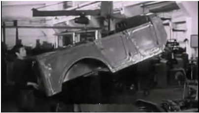
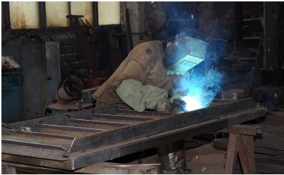
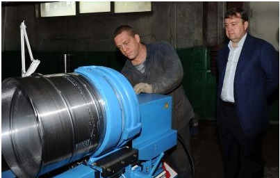
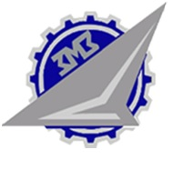
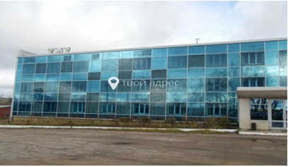
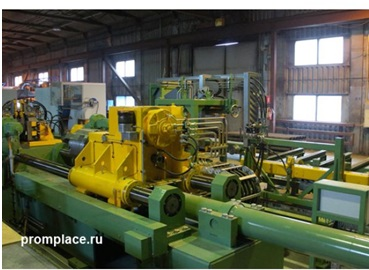
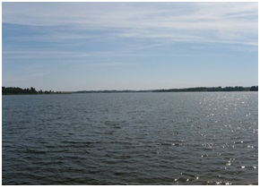
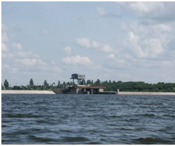
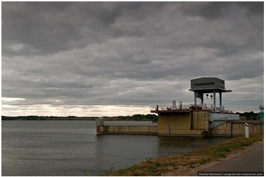
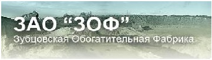

Зубцов
Экономика
ОАО "Зубцовский РМЗ" (ремонтно-механический завод)
  Основным видом деятельности является:
• Производство металлических дверей и окон
• Деятельность автомобильного грузового транспорта и услуги по перевозкам
• Производство прочих машин и оборудования общего назначения, не включенного в другие группировки
• Производство строительных металлических конструкций, изделий и их частей
Зубцовский ремонтно-механический завод нашел свою нишу на рынке, его продукция востребована, и спрос на нее продолжает расти. Руководство предприятия разработало программу модернизации оборудования и приступило к ее внедрению. Сейчас в Москве появился спрос на мусоропроводы с двойным стволом, обеспечивающие высокий уровень поглощения шума. Зубцовский ремонтно-механический завод уже готов к их изготовлению: для этого есть все необходимое оборудование и есть люди, которые хотят и умеют работать.
Машиностроительный завод
  История Зубцовского машиностроительного завода берет своё начало в 1979 году, когда в Зубцове был образован филиал Всесоюзного института легких сплавов (ВИЛС). Основной задачей филиала являлось производство нестандартного технологического оборудования для авиационной промышленности. В 90-е годы предприятие было перепрофилировано на производство ферросплавов и литейных алюминиевых сплавов.
Кардинальные перемены в производственной деятельности завода произошли в мае 2008 года после смены собственников предприятия. Сейчас предприятие входит в группу компаний, контролируемых крупным международным трейдером на рынке ферросплавов и металлов – DCM DECOmetal GmbH. После проведенной модернизации и установки нового оборудования основной продукцией предприятия являются слитки и прокат из титановых сплавов и алюминиевый экструдированный профиль. Перед новым предприятием стоят непростые задачи: вход на конкурентный и высокотехнологичный рынок, подтверждение качества выпускаемой продукции, увеличение объемов продаж, проведение широкомасштабной реконструкции и модернизации оборудования. Сегодня эти мероприятия производятся одновременно с обучением и повышением квалификации персонала. На предприятии работают более 300 человек, большинство из которых имеют высшее и средне-специальное образование, некоторые специалисты обладают уникальным опытом в области металлургии легких сплавов.
В августе 2010 года завершились работы по сертификации системы менеджмента качества, проводимые представителями двух компаний - Орган по сертификации систем менеджмента качества «Металлсертификат» и SGS Vostok Limited, внесением нашего предприятия в Регистр систем качества и выдачей соответствующих сертификатов.
Сегодня завод является самым крупным промышленным предприятием Зубцовского района и одним из крупнейших предприятий Тверской области. Он обеспечивает клиентов высоким качеством и минимальными сроками изготовления продукции.
Плотина Вазузкой гидротехнической системы
  Строительство водохранилища было начато в 1957 году, а заполнено оно уже было к 1978 году. Плотина находится в деревне Пашутино Зубцовского района, ее длина составляет 800 метров, вода же в свою очередь сбрасывается в нее с высоты в 24 метра.
В состав Вазузской гидросистемы входит три водохранилища: Вазузское водохранилище, Яузское водохранилище и Верхнерузское водохранилище. Вазузская гидросистема относится к Москворецкому (второму Волжскому) источнику водоснабжения г. Москвы и используется в качестве резерва параллельно с Яузским водохранилищем, образуя Вазузскую гидросистему. Это самый удаленный источник воды для нужд Москвы и Московской области. Необходимость в резерве воды возникла после Великой Отечественной войны в связи с бурным ростом промышленности и жилищного строительства. Проектные работы по строительству гидросистемы начались в 1957 году. Так как превоначальный выбор пал на реку Вазуза, первым было построено и заполнено в 1977-78 годах Вазузское водохранилище. В марте 1977 года были сданы в эксплуатацию Зубцовский гидроузел на реке Вазуза и Кармановский гидроузел на реке Яуза, а решением исполкома Моссовета создано предприятие "Вазузская гидротехническая система". В пользу выбора реки Вазуза говорила исключительная чистота этих мест. На берегах не было и нет крупных промышленных предприятий и других возможных источников загрязнения. Еще один положительный фактор в пользу этого выбора – впадение Вазузы в Волгу и близость к реке Руза, впадающей в реку Москва, что дает возможность использовать Вазузскую гидросистему для снабжения водой Москвы и Московской области.
ЗАО Обогатительная фабрика (ЗАО "ЗОФ")


«Зубцовская обогатительная фабрика» на протяжении долгого периода времени занимается производством сухих строительных смесей, обогащения кварцевого песка и поставками сухого фракционированного песка сушка, обогащение и переработка песков карьеров Зубцовскго и Ржевского районов, производство сухих строительных смесей
Категории:
• Добыча гравия, песка и глины / Разработка гравийных и песчаных карьеров
• Производство изделий из бетона, гипса и цемента / Производство сухих бетонных смесей
• Оптовая торговля лакокрасочными материалами, листовым стеклом, сантехникой и прочими строительными материалами / Оптовая торговля прочими строительными материалами
Предполагаемые товары и услуги:
• Щебень шлаковый доменный и сталеплавильный для дорожного строительства
• Галька и кремневый гравий
• Гравий и песок
• Гранулы, крошка и порошок из мрамора
• Макадам (покрытие щебеночное дорожное); макадам гудронированный
• Пески кремнистые и кварцевые
• Крошка мраморная электротехническая
• Щебень строительный мытый
• Гравий немытый
• Пески природные, не включенные в другие группировки, прочие